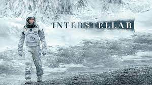
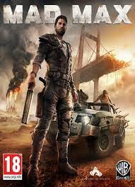
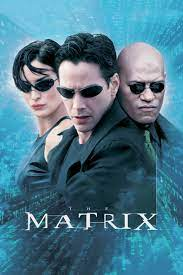
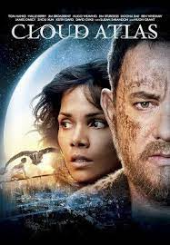

Наше время на Земле подошло к концу, команда исследователей берет на себя самую важную миссию в истории человечества; путешествуя за пределами нашей галактики, чтобы узнать есть ли у человечества будущее среди звезд.

Преследуемый призраками беспокойного прошлого Макс уверен, что лучший способ выжить - скитаться в одиночестве. Несмотря на это, он присоединяется к бунтарям, бегущим через всю пустыню на боевой фуре, под предводительством отчаянной Фуриосы.

Жизнь Томаса Андерсона разделена на две части: днём он — самый обычный офисный работник, получающий нагоняи от начальства, а ночью превращается в хакера по имени Нео, и нет места в сети, куда он бы не смог проникнуть. Но однажды всё меняется. Томас узнаёт ужасающую правду о реальности.

Несколько переплетённых в фильме историй подобны зеркальному лабиринту, в котором перекликаются и наслаиваются друг на друга шесть голосов: нотариуса середины ХIХ века, возвращающегося в США из Австралии, молодого композитора, который вынужден торговать душой и телом в Европе между мировыми войнами.